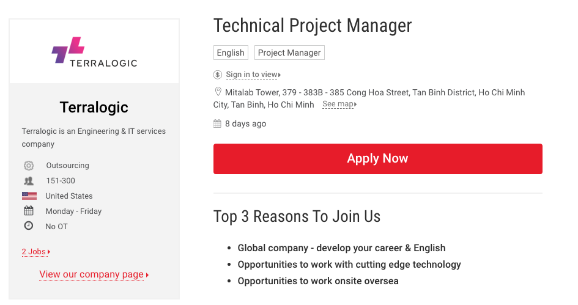

Personal Information
• Name: Khuc Thi Xuan Quyen
• Student number: s3618696
• Email address: a3618696@rmit.edu.vn
• Essential background: I was born in Da Lat City. I've been
lived in Ho Chi Minh City for four years since I graduated from
high school.
• Fact: I'm a very active person in the sport, especially gym
bodybuilder and street workout. I'm a cat person as well. My
cat's name is Bong Gon. He always likes to protect the skin from
the sun and cold.
01
Interest in IT
What, When Interest in IT and experiences
Like many teenagers, after graduating from high school, I decided to go to RMIT to study marketing and an expectation that marketing will help me to discover more of my potential and will bring me a great job after graduation. Unfortunately, after a year of learning in marketing, I felt my self was not born for this profession. I found my self very curious about everything, especially the thing that high technology. My mind always is bothered by one question, which is HOW IT WORK. After receiving some advice from the school, I decided to change my field to software engineer. In the second year at the software, I started my first job as a mobile developer for a Singapore company in Vietnam. My primary skill was Flutter and React native. A year later, my boss wanted me to try on building a web app with many combinations of React JS, Redux, and Graph QL. For now, I work as a front-end developer along with a project management trainy position. For that, I could not spend a lot of time for school, so I decided to change to IT, which an expectation that IT will save me a lot of time cause my current work is IT as well.
Why come to RMIT
I had been looking for many opportunities to go oversea after high school. However, my parent did not support my plan cause they did not want to be far away from me. Therefore, they encourage me to go to RMIT.
Expectation of Learning IT at RMIT
There are various skills that I wish to learn from my study in IT. Mainly, I focus on improving my code along with the right product thinking. Second, my ideal position is being technical project management. Hence besides the increasing level of designing a web app or mobile apps. I prefer to learn more about communication, UX, UI design, and leadership skill.
02
Ideal Job
Dream to be Technical Project Management

Job Link
https://itviec.com/it-jobs/technical-project-manager-terralogic-2233Position Description
The Technical Project Manager performs a wide range of strong development background, leadership skills, and good English. They involve defining project scope, then create a detailed work plan and measure upon the project completion. After giving the idea, they need to review and revise the project schedule. Then communicate back to stakeholders for the project progress. Finally, they need to implement the training process and strategies for the team.
Position Requirement
This position is required: experience in the web app, mobile app, cloud, a degree of Computer Science, having at least seven years in Software Development, at least one year working as PM in the software industry, a solid understanding of software development, reliable communication in English, and other leadership skills.
My Current Experience
Two-year experience in the web app, mobile app. I'm currently working as a PM training at my company. I can communicate fluently in English, and have some experience working with foreign customers.
My Plan
・Challenging my self in more sophisticated web and mobile app
・Enjoy more leadership activities at school to improve
leadership skills
・Continue practicing PM job in my company
・Self-learning on the backend field.
03
Personal Profile
All those tests are useful
All the tests are tremendously helpful for me to gain more information. Those remind me of my strengths and weaknesses. Therefore, I would notice this to do best on self-learning and my working journey.
It does influence my behaviour in a team
I'm good at gathering and analyzing data. I would do best in fields that require productivity and the capacity to decipher complex data. However, I lack interacting with others and prefer to work alone. My decision always based on logic and objective information rather than subjective emotions. Hence my teammates might see me as a conservative person. Therefore, to work well in a team, I will prefer to talk to more people and learn from them and feel close to them. I instead of making mentally quick for a decision, I prefer to listen more and get more information.
Forming a team
Like my personality, I like to be around creative people because I'm not a very creative one, so being around them gives me a lot of space for learning. Similarly, forming with the extrovert person is a great environment to improve my weaknesses.